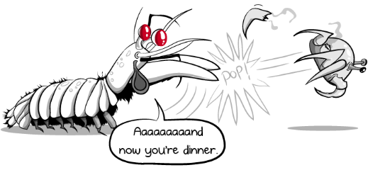
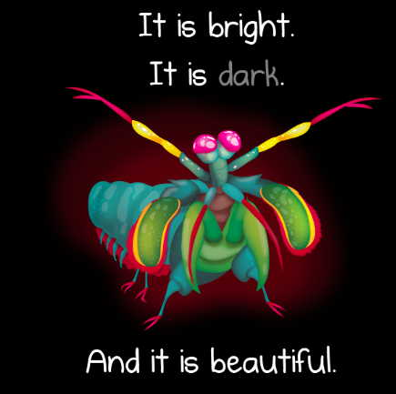
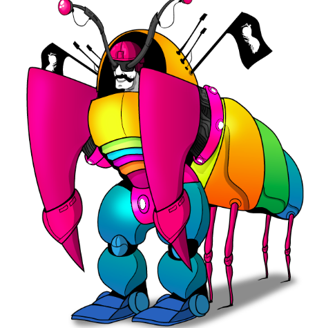

Fatos sobre o Stomatopoda
A Lagosta Assassina
- Nome Científico: Odontodactylus Scyllarus
- Reino: Animalia
- Filo: Arthropoda
- Subfilo: Crustacea
- Classe: Malacostraca
- Subclasse: Hoplocarida
- Ordem: Stomatopoda
One Punch Lagosta
O Stomatopoda pode dar um soco com a velocidade de uma bala de calibre .22 - forte o suficiente para quebrar as cascas de sua presa, assim como o vidro de um aquarium.
Wombo Combo
Quando um Stomatopoda atinge seu alvo, a velocidade do seu golpe faz com que a água vaporize e imploda com um estrondo agudo, calor extremamente alto e um flash de luz - tudo isso é sentido pela presa como um golpe adicional.
Lock and Loaded
Quando o braço golpeador de um Stomatopoda não está em uso, ele fica dobrado sob o corpo do animal, comprimindo uma mola em forma de sela que impulsiona seus ataques estupendos.